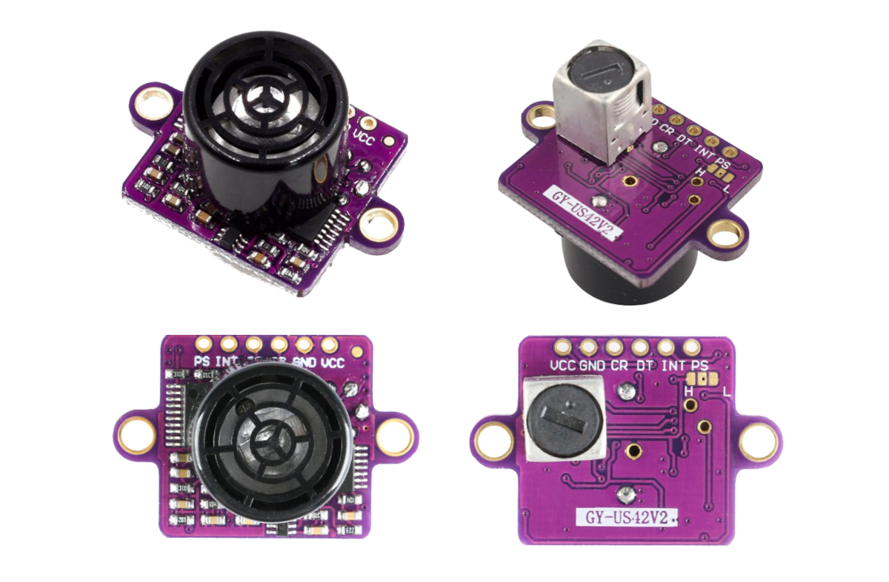
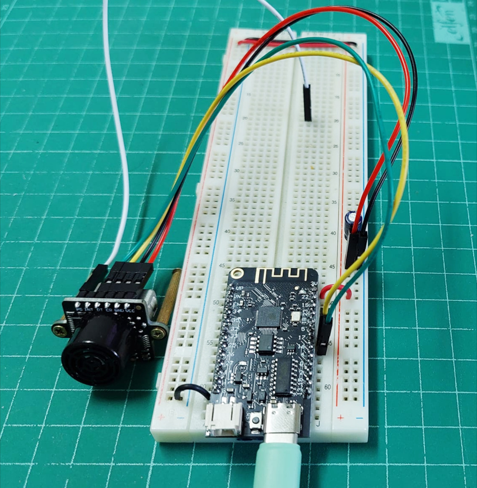
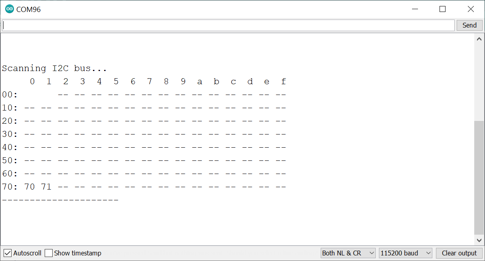
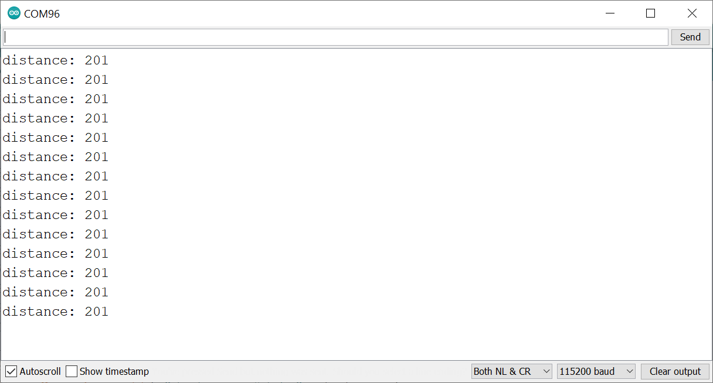

การใช้งานโมดูล GY-US042v2 Ultrasonic Sensor#
▷ GY-US042v2#
บทความนี้นำเสนอการใช้งาน GY-US042v2 ซึ่งเป็นโมดูลเซนเซอร์อัลตราโซนิก (Ultrasonic Sensor Module) ที่มีคุณสมบัติดังนี้
- ใช้แรงดันไฟเลี้ยง VCC ได้ในช่วง 3V ~ 5V (ใช้กระแสไฟฟ้าประมาณ 9mA @5V)
- ระยะทางที่วัดได้ (Measurement Range): เริ่มต้นตั้งแต่ 20cm สูงสุด 720cm
- ความละเอียดของค่าที่วัดได้ (Resolution): 1cm
- โหมดการทำงาน 3 โหมด
- I2C (SCL/SDA) mode (default)
- Serial (Tx/Rx) mode (baud: 9600)
- Pulse (Trigger/Echo) mode
- ระยะเวลาในการวัดระยะทางจากวัตถุกีดขวางไม่เกิน: 65ms
- คอนเนกเตอร์มี 6 ขา (2.54mm pin spacing)
- Pin1: VCC
- Pin2: GND
- Pin3: CR (SCL/Rx/Trigger)
- Pin4: DT (SDA/Tx/Echo)
- Pin5: INT (Measurement Status)
- Pin6: PS (Working Mode Selection)
- ขาสัญญาณเชื่อมต่อ:
- CR pin: SCL (I2C mode), Rx (Serial mode), Trigger (Pulse mode)
- DT pin: SDA (I2C mode), Tx (Serial mode), Echo (Pulse mode)
- ด้านหลังของโมดูลมี Solder Pads ไว้สำหรับบัดกรีเลือกโหมดการทำงาน หรือใช้ขา PS เป็นตัวเลือก
- โหมด Serial: ขา PS ต่อกับ VCC เพื่อกำหนดลอจิกเป็น H (High)
- โหมด Pulse: ขา PS ต่อกับ GND เพื่อกำหนดลอจิกเป็น L (Low)
- โหมด I2C: ขา PS ไม่เป็น L หรือ H (ให้ปล่อยลอยไว้เป็น Floating input / Unconnected)

รูป: โมดูล GY-US042v2
การทำงานในโหมด I2C มีแอดเดรสแบบ 7 บิต (7-bit Address) เท่ากับ 0x70 (default) แต่สามารถส่งคำสั่งไปเปลี่ยนหรือตั้งค่าแอดเดรสได้ ถ้าต้องการวัดระยะทางให้ส่งคำสั่ง 0x51 ไปยังโมดูลดังกล่าว เว้นระยะเวลาอย่างน้อย 65 ms แล้วอ่านข้อมูล 2 ไบต์ ซึ่งเป็น High byte และ Low byte เพื่อนำมาต่อกันแบบ Big Endian จะได้ค่าเลขจำนวนเต็ม หน่วยเป็นเซนติเมตร
การทำงานในโหมด Serial จะใช้ขา DT สำหรับ TX และขา CR สำหรับ RX และใช้ค่า Baudrate เท่ากับ 9600 โดยจะวัดระยะทางและส่งค่าออกมาต่อเนื่องไปเรื่อย ๆ (Continuous Output) ด้วยอัตราไม่เกิน 1000/65 = 15 ครั้งต่อวินาที
ข้อมูลที่ถูกส่งออกมาในแต่ละครั้ง จะมีจำนวน 7 ไบต์ ตามรูปแบบดังนี้
0x5A 0x5A 0x45 0x02 HB LB CS
- Frame header (2 bytes):
0x5A 0x5A - Frame data type (1 byte):
0x45 - Amount of data (1 byte):
0x02 - Data (2 bytes):
HB= High Byte,LB= Low Byte - Checksum (1 byte):
CS= Checksum (Sum of the first 6 bytes)
การทำงานในโหมด Pulse จะต้องส่งสัญญาณพัลส์ ไปยังขา CR (Trigger) ของโมดูลเซนเซอร์ และรอสัญญาณพัลส์ที่ขา DT (Echo) เป็นสัญญาณตอบกลับ และใช้ในการวัดความกว้างของสัญญาณดังกล่าว
▷ การทำงานในโหมด I2C#
ตัวอย่างโค้ด Arduino Sketch ต่อไปนี้ ใช้สำหรับบอร์ด ESP32 เช่น WeMos Lolin32 Lite เพื่อสาธิตการตรวจสอบดูว่า มีโมดูลเชื่อมต่อกับบัส I2C หรือไม่
ในการทดลอง ให้นำโมดูลเซนเซอร์มาต่อกับ ESP32 ในโหมดการทำงานแบบ I2C ตัวอย่างนี้ได้เลือกใช้ขา GPIO16 และ GPIO17 ของ ESP32 สำหรับ SDA และ SCL ตามลำดับ และใช้แรงดันไฟเลี้ยงสำหรับโมดูลเท่ากับ 3.3V
#include <Wire.h>
#define I2C_SDA_PIN (16)
#define I2C_SCL_PIN (17)
void setup() {
Serial.begin( 115200 );
Wire.begin( I2C_SDA_PIN, I2C_SCL_PIN );
Wire.setClock( 400000 ); // 400kHz
}
void i2c_scan() {
int n_devices = 0;
Serial.println( "Scanning I2C bus..." );
Serial.print( " " );
for ( uint8_t col=0; col < 16; col++ ) {
Serial.printf( "%3x", col );
}
Serial.println( "" );
uint8_t addr=0;
for( uint8_t row=0; row < 8; row++ ) {
Serial.printf( "%02x:", row << 4 );
for ( uint8_t col=0; col < 16; col++ ) {
if ( row == 0 && addr<=1 ) {
Serial.print(" ");
} else {
Wire.beginTransmission( addr );
if ( Wire.endTransmission()>0 ) {
Serial.printf( " --" );
} else {
Serial.printf( " %2x", addr );
n_devices++;
}
}
addr++;
}
Serial.println( "" );
}
Serial.println( "---------------------\n\n" );
Serial.flush();
}
void loop() {
i2c_scan();
delay(2000);
}

รูป: การต่อวงจรทดลองโมดูล GY-042V2 ร่วมกับบอร์ด ESP32

รูป: ตัวอย่างข้อความเอาต์พุตในหน้าต่างของ Arduino Serial Monitor
จากข้อความเอาต์พุตใน Arduino Serial Monitor จะเห็นได้ว่า มีอุปกรณ์ที่ทำงานเป็น
I2C Slave Device อยู่ 2 อุปกรณ์ มีค่าแอดเดรสเท่ากับ 0x70 และ 0x71 ตามลำดับ
ถัดไปเป็นตัวอย่างโค้ดสำหรับอ่านค่าจากโมดูลเซนเซอร์ ที่มีแอดเดรสเท่ากับ 0x70 และค่าที่วัดได้เป็นเลขจำนวนเต็ม
มีหน่วยเป็นเซนติเมตร ถ้ามีค่าไม่เท่ากับ INVALID_VALUE หรือ 720 จะถือว่า
เซนเซอร์สามารถวัดระยะทางจากวัตถุกีดขวางได้
#include <Wire.h>
// select GPIO pins for I2C bus
#define I2C_SDA_PIN (16)
#define I2C_SCL_PIN (17)
#define INVALID_VALUE (720)
#define I2C_ADDR (0x70)
void setup() {
Serial.begin( 115200 );
Serial.println( "ESP32 GY-042V2 (I2C Mode)" );
Serial.flush();
Wire.begin( I2C_SDA_PIN, I2C_SCL_PIN );
Wire.setClock( 400000 ); // 400kHz
}
uint32_t read_sensor( uint8_t addr ) {
Wire.beginTransmission( addr );
Wire.write( 0x51 ); // send the measurement command
if ( Wire.endTransmission( ) > 0 ) {
return INVALID_VALUE;
}
delay( 65 ); // Wait at least 65 msec.
Wire.requestFrom( addr, 2, true );
if ( Wire.available() >= 2 ) {
uint16_t distance = Wire.read();
distance = (distance << 8) | Wire.read();
return distance; // in cm.
}
return INVALID_VALUE;
}
void loop() {
int distance = read_sensor( I2C_ADDR );
if (distance < INVALID_VALUE) {
Serial.printf( "distance: %3u\n", distance );
delay(100);
}
}

รูป: ตัวอย่างข้อความเอาต์พุตจากการวัดระยะทางในโหมด I2C (วัดระยะทางได้ 201 ซม.)
หากต้องการเปลี่ยนแอดเดรสของโมดูล ก็สามารถสร้างและเรียกใช้ฟังก์ชันดังนี้
void change_addr( uint8_t old_addr, uint8_t new_addr ) {
Wire.beginTransmission( old_addr );
Wire.write( 0xAA );
Wire.write( 0xA5 );
Wire.write( new_addr << 1 );
Wire.endTransmission( );
}
ตัวอย่างการเรียกใช้ฟังก์ชัน เช่น change_addr( 0x70, 0x71 );
ซึ่งเป็นตัวอย่างการเปลี่ยนจากแอดเดรสจากเดิม 0x70 ให้เป็น 0x71
และเมื่อเปลี่ยนแอดเดรสใหม่แล้ว จะต้องรีเซตการทำงานของโมดูล จึงจะเริ่มใช้แอดเดรสใหม่
▷ การทำงานในโหมด Serial#
ถัดไปเป็นการทดลองใช้งานโมดูลในโหมด Serial โดยใช้วงจร UART ภายใน ESP32 และเลือกใช้ Serial2 ซึ่งจะต้องใช้ขา GPIO16 / GPIO17 สำหรับขา RX และ TX ตามลำดับ และใช้ค่า Baudrate เท่ากับ 9600 และที่สำคัญคือ จะต้องต่อขา PS ไปยัง VCC (3.3V) เพื่อเลือกโหมดการทำงานให้ถูกต้อง
การทำงานของโค้ดตัวอย่างนี้ จะคอยรับข้อมูลไบต์จากโมดูลเซนเซอร์ที่ส่งข้อมูลชุดละ 7 ไบต์
และสามารถใช้ข้อมูลที่มีค่า 0x5A เป็นตัวแบ่ง หรือ Delimiter แล้วเก็บข้อมูลที่อ่านได้ลงในอาร์เรย์
เพื่อนำไปตรวจสอบค่า Checksum Byte ถ้าได้ค่าถูกต้อง ก็ให้แปลงข้อมูล 2 ไบต์ ให้เป็นค่าตัวเลขสำหรับระยะทางที่วัดได้
// see: https://github.com/espressif/arduino-esp32/blob/master/cores/esp32/HardwareSerial.cpp
#define ESP_SERIAL Serial2
#define ESP_SERIAL_RX_PIN (16)
#define ESP_SERIAL_TX_PIN (17)
#define SENSOR_SERIAL_BAUD (9600)
#define SERIAL_TIMEOUT_MS (100)
#ifdef LED_BUILTIN
#define LED_PIN LED_BUILTIN
#else
#define LED_PIN 22
#endif
byte buf[7] = {0x5A,0x5A,0x00};
void setup() {
pinMode( LED_PIN, OUTPUT );
digitalWrite( LED_PIN, LOW );
Serial.begin( 115200 );
ESP_SERIAL.begin( SENSOR_SERIAL_BAUD );
Serial.println( "ESP32 GY-042V2 (Serial Mode)" );
Serial.flush();
Serial.setTimeout( SERIAL_TIMEOUT_MS );
ESP_SERIAL.setTimeout( SERIAL_TIMEOUT_MS );
digitalWrite( LED_PIN, HIGH );
}
void loop() {
int n_read = ESP_SERIAL.readBytesUntil( 0x5A, &buf[2], 5 );
if ( n_read == 5 && buf[2] == 0x45 && buf[3] == 0x02 ) {
digitalWrite( LED_PIN, HIGH );
uint8_t sum = 0;
for ( int i=0; i < 6; i++ ) { // sum of the first 6 bytes
sum += buf[i];
}
if ( sum == buf[6] ) { // checksum OK
uint16_t distance = buf[4];
distance = (distance << 8) | buf[5];
Serial.printf( "distance(cm): %3u\n", distance );
} else {
Serial.printf( "checksum failed\n");
}
digitalWrite( LED_PIN, LOW );
delay(100);
}
}
▷ การทำงานในโหมด Pulse#
ถัดไปเป็นการทดลองใช้งานโมดูลเซนเซอร์ในโหมด Pulse และเลือกใช้ GP16 และ GP17 ของ ESP32 เป็นขา Echo และ Trigger ตามลำดับ และจะต้องต่อขา PS ไปยัง GND เพื่อเลือกโหมดการทำงานให้ถูกต้อง
ตัวอย่างโค้ดสาธิตมีดังนี้
#define SOUND_SPEED (342)
#define US_TO_CM(t) ((SOUND_SPEED*t)/20000)
#define TIMEOUT_USEC (40000)
#define ECHO_PIN (16)
#define TRIG_PIN (17)
void setup() {
pinMode( ECHO_PIN, INPUT );
pinMode( TRIG_PIN, OUTPUT );
Serial.begin( 115200 );
Serial.println( "ESP32 GY-042V2 (Pulse Mode)" );
Serial.flush();
}
uint32_t read_sensor() {
digitalWrite( TRIG_PIN, HIGH );
delayMicroseconds( 20 );
digitalWrite( TRIG_PIN, LOW );
// Measure the HIGH pulse width (in usec)
return pulseIn( ECHO_PIN, HIGH, TIMEOUT_USEC );
}
void loop() {
uint32_t t_usec = read_sensor();
Serial.print( "distance(cm): " );
if ( t_usec == 0 ) { // no pulse detected
Serial.println( "---" );
} else {
Serial.printf( "%3lu\n", US_TO_CM(t_usec) );
}
delay(100);
}
ในโค้ดตัวอย่าง เมื่อได้สร้างสัญญาณเอาต์พุตที่ขา Trigger เป็นพัลส์ความกว้างประมาณ 20 ไมโครวินาทีแล้ว
ขั้นตอนถัดไปคือ การวัดความกว้างของพัลส์ที่เกิดกับสัญญาณ Echo โดยใช้ฟังก์ชัน
pulseIn() ซึ่งเป็นคำสั่งของ Arduino API
โดยจะต้องระบุหมายเลขขา Echo สำหรับสัญญาณพัลส์ช่วงที่เป็น HIGH
และมีการกำหนดระยะเวลาในการรอเพื่อวัดความกว้างของพัลส์ที่เกิดขึ้น
หรือ "Waiting Timeout" ไว้ไม่เกิน 40000 (ไมโครวินาที)
ความกว้างของสัญญาณพัลส์ คือ ระยะเวลาในการเดินทางไปและกลับของคลื่นเสียงอัตราโซนิกเมื่อสะท้อนกลับจากวัตถุกีดขวางด้านหน้า ถ้ากำหนดให้ความเร็วเสียงในอากาศ () เช่น 342 เมตร/วินาที โดยประมาณ (ขึ้นอยู่กับปัจจัย เช่น อุณหภูมิและความชื้นสัมพัทธ์ของอากาศด้วย) จะสามารถเขียนสูตรคำนวณได้ดังนี้
หรือเขียนใหม่ได้เป็น
▷ กล่าวสรุป#
บทความนี้ได้นำเสนอการใช้งานโมดูลเซนเซอร์อัลตราโซนิก GY-US042v2 และตัวอย่างการเขียนโค้ด Arduino Sketch สำหรับบอร์ดไมโครคอนโทรลเลอร์ ESP32 เพื่ออ่านค่าจากโมดูลเซนเซอร์ ในโหมดการทำงาน I2C, Serial และ Pulse ตามลำดับ
บทความที่เกี่ยวข้อง
- การใช้งานโมดูล HC-SR04 Ultrasonic Sensor
This work is licensed under a Creative Commons Attribution-ShareAlike 4.0 International License.
Created: 2022-10-18 | Last Updated: 2022-10-18